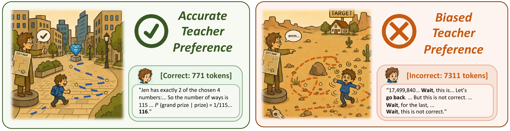

On-policy distillation · A reinforcement learning perspective
Gains and Collapse in
On-Policy DistillationA Reinforcement Learning Perspective
1 Zhejiang University 2 Westlake University
* Equal contribution † Corresponding author
A student can learn its teacher’s preferences
and still collapse.

In on-policy distillation (OPD), the student writes the answers and the teacher scores them. Our experiments reveal how this feedback can make correct reasoning easier to sample—or amplify repetition the teacher rarely produces itself.
01 / The gains
Better at answering.
But solving anything new?
With one attempt, the distilled student is much more accurate. Give the initial student more attempts, and it catches up.

OPD-only problems
We checked the apparent “new” solutions.
Additional sampling and manual review resolved every candidate in the targeted AIME audit: either the initial student also found a valid solution, or the OPD solution was invalid.
Look closer: coverage & per-problem success
The audited initial student solved 73 problems; the JustRL- and DeepScaleR-distilled students covered 65 and 63. For candidate OPD-only problems, we extended the initial student’s pool from 256 to 1,024 responses.


Success rates increased on 90.6% of already-solvable problems with JustRL and 84.4% with DeepScaleR.
02 / The collapse
The loss looks fine.
The answers don’t.
Now consider Qwen3-4B teaching Qwen3-1.7B-Base. Optimization converges smoothly, but the student’s responses become overlong and repetitive.
What the teacher writes vs. what the student becomes
AIME24–26 · Final generationsThe student’s accuracy still rises from 0.2% to 5.4%. Accuracy alone misses the degeneration.
Meanwhile, the student increasingly favors the responses preferred by its teacher. The feedback is being learned—even as generation quality deteriorates.
See the evidence: convergence & learned preferences

Both runs converge and concentrate on responses already likely under the initial student.

The selection gap measures how much training favors the teacher’s top-ranked over bottom-ranked initial-student responses. It grows modestly with JustRL and sharply in the collapsed Qwen3 setting.
03 / The blind spot
The teacher rarely writes this.
Why does it reward it?
The warning signs exist before the first OPD update. Some initial-student answers receive favorable teacher feedback despite being excessively long or repetitive.
A solution that ends.
“Number of grand prize outcomes: 1. … Number of prize outcomes (≥ 2 matches): 115. …
P(Grand Prize | Prize) = 1/115.
Thus, m + n = 1 + 115 = 116.”
An answer that won’t stop.
“Final Answer: 116 …
Answer: 116 …
Final Answer: 116 …
Answer: 116 …”
until the length limit
Real excerpts from the paper’s Qwen3-4B examples. Ellipses indicate omitted text. The student example predates OPD; examples illustrate behavior, not prevalence.
Another example: repeated reconsideration
“17,499,840/661,680 = 26.5. Wait, this is incorrect. The calculation is not correct. Instead, we should compute the number of valid sequences. Let’s go back. … But this is not correct. Wait, for the last word to be GY, … Wait, this is not correct.”
Teacher-preferred initial-student response · Incorrect · 7,311 tokens.
What does the teacher favor?
Sort initial-student answers from least to most preferred by the teacher. In the successful setting, preferred answers are more often correct. In the collapsed setting, the highest-ranked answers are disproportionately repetitive.
Each group contains 10% of initial-student responses, ranked by mean teacher advantage. Whiskers reproduce the paper’s uncertainty intervals; dashed lines show the teacher’s own mean response length. Axis ranges stay fixed when switching settings.
View chart values

Rare pathological answers
are already in the pool.
Some receive high
teacher advantage.
These behaviors become
more likely to appear.
04 / Breaking the cycle
Same teacher.
A different trajectory.
Keep the teacher fixed. Change which student responses are available for reinforcement.
Mask truncated responses
Set the loss to zero for answers that reach the generation limit.
Recovers from degeneration ↗Start from SFT
Initialize with an SFT student that rarely samples these pathological answers.
Avoids this collapse ↗
Average accuracy with masking
10.16% → 13.24%Qwen3-4B teacher · AMC23 & AIME24–26
All teacher sizes & benchmark results
| Setting | AMC23 | AIME24 | AIME25 | AIME26 | Avg. |
|---|---|---|---|---|---|
| Base, before OPD | 2.41 | 1.67 | 0.00 | 1.67 | 1.44 |
| 4B → Base | 29.82 | 3.33 | 3.33 | 4.17 | 10.16 |
| + masking | 34.64 | 8.33 | 5.83 | 4.17 | 13.24 |
| 8B → Base | 28.31 | 5.00 | 3.33 | 5.00 | 10.41 |
| + masking | 32.83 | 5.00 | 2.50 | 3.33 | 10.92 |
| 30B-A3B → Base | 28.61 | 6.67 | 2.50 | 4.17 | 10.49 |
| + masking | 33.13 | 10.00 | 4.17 | 5.00 | 13.07 |
| 4B → SFT (warmup) | 38.86 | 9.17 | 10.00 | 7.50 | 16.38 |
Masking improves the average across all three teacher sizes, though not every benchmark improves. Warmup starts from a stronger SFT initialization, so its result includes that initialization advantage.
The bigger picture
Look beyond what
the teacher can generate.
Ask how reliably it evaluates
what the student actually writes.
OPD amplifies student behaviors through the teacher’s implicit feedback. That perspective connects its gains, its collapse, and the interventions that help.
Scope of these findings
Our experiments focus on small language models and competition mathematics. Coverage is measured with finite sampling and targeted manual audits. Masking and SFT warmup address the overlong, repetitive behavior studied here; these results do not establish a universal solution to OPD collapse.
Successful settings use JustRL-1.5B and DeepScaleR-1.5B-Preview teaching DeepSeek-R1-Distill-Qwen-1.5B on DeepMath. The collapsed setting uses Qwen3-4B teaching Qwen3-1.7B-Base on OpenThoughts3. The paper provides full protocols.
Citation
@misc{cui2026gains,
title = {Gains and Collapse in On-Policy Distillation:
A Reinforcement Learning Perspective},
author = {Han Cui and Jianhao Yan and Yun Luo and
Hongbo Zhang and Zhizhang Fu and Yue Zhang},
year = {2026},
url = {https://github.com/HancCui/opd_hacking}
}